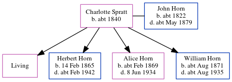

Charlotte Anne Horn (née Spratt) c1840 -
[ Home ] | [ Calendar ] | [ Surnames Index ] | [ Census Index ] | [ Family History ]A laundress, Charlotte Spratt, the wife of John Horn (the three times great-uncle of Nigel Horne), was born in Hoath, Kent, England c. 1840 and married John (an agricultural laborer with whom she had 4 children: Mary Elizabeth, Herbert James, Alice Clara and William James, along with 1 surviving child) in Thanet, Kent, England around Aug 18591.
During her life, she was living at Northdown, Margate, Kent on Apr 2, 18712; and at Victoria Road, Margate, Kent on Apr 3, 18813.
Children
- Herbert James was born on Feb 14, 1865
- Alice Clara was born c. Feb 1869
- William James was born c. Aug 1871
Citations
- England & Wales Marriages 1837-2005 - Findmypast
- 1871 England, Wales & Scotland Census - Findmypast (was age 31 and the wife of the head of the household)
- 1881 England, Wales & Scotland Census - Findmypast (was age 42 and the head of the household)
Media
1881 England, Wales & Scotland Census - GBC/1881/0004835145
Family Tree
Generated by ged2site. Last updated on Jun 11, 2024